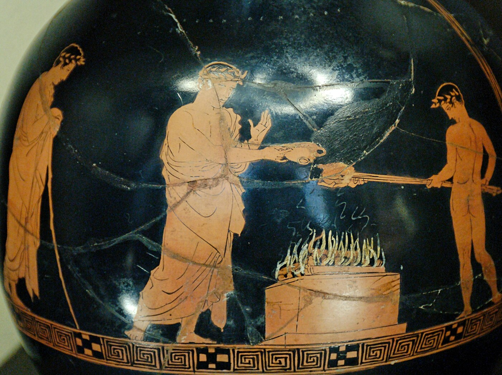
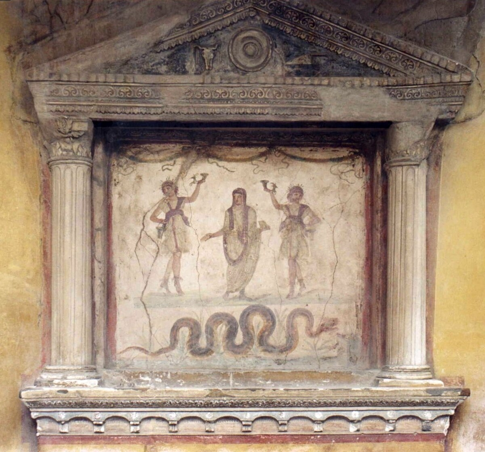

História · Religião · Mitologia · Sociedade · Literatura · Arqueologia
Religião Greco-Romana
Deuses, rituais, sociedade e transformação histórica
Muito além de Zeus, Atena, Júpiter ou Vênus, os mundos grego e romano reuniam cultos cívicos e domésticos, oferendas, festivais, sacerdócios, oráculos e tradições locais que mudaram durante séculos.
Entender o essencial“Religião greco-romana” é uma categoria moderna, não uma igreja antiga única
Comunidades gregas e romanas possuíam tradições diversas. Semelhanças, equivalências entre divindades e circulação mediterrânica não apagam diferenças locais, sociais e históricas. [1] [5]
Nesta página
O essencial antes dos nomes dos deuses
Origem
Tradições religiosas desenvolvidas em diferentes comunidades gregas, itálicas e romanas durante a Antiguidade.
Característica central
A prática envolvia sobretudo cultos, ritos, oferendas e relações com divindades; não existia um credo universal equivalente a uma confissão moderna. [1]
Transformação
Helenização, expansão romana, mobilidade, cultos locais e cristianização alteraram profundamente o cenário religioso. [8]
Legado
Textos, imagens, monumentos e conceitos religiosos continuaram influenciando literatura, arte, filosofia e memória cultural.
Mitologia ≠ religião vivida
Poemas e histórias são fontes importantes, mas não substituem os ritos, instituições, espaços e objetos da vida religiosa.
Mitologia
- Zeus, Hera e Atena
- Héracles e Prometeu
- genealogias divinas
- guerras e viagens heroicas
- narrativas cosmogônicas
Fonte típica: poesia, teatro, iconografia.
Religião vivida
- orações e oferendas
- sacrifícios e banquetes
- festivais e procissões
- cultos domésticos
- sacerdócios, oráculos e iniciações
Fonte típica: santuários, inscrições, objetos e textos rituais.
Conhecer os mitos não significa conhecer completamente as religiões antigas.
Uma história longa, não um sistema congelado
Antecedentes
Alguns cultos e formas religiosas posteriores dialogam com tradições mais antigas do Egeu, embora continuidade específica precise ser demonstrada caso a caso. [1]
Grécia Arcaica
Homero e Hesíodo preservam importantes tradições poéticas; santuários e festivais ganham grande visibilidade.
Grécia Clássica
Cultos cívicos, oráculos, festivais e santuários articulam religião, identidade e vida política.
Mundo Helenístico
Mobilidade e expansão política intensificam encontros entre cultos, divindades e tradições mediterrânicas.
República Romana
Magistraturas, sacerdócios, calendários e rituais públicos participam da vida da res publica. [5]
Antiguidade Tardia
O crescimento do cristianismo e a legislação imperial transformam gradualmente os cultos tradicionais, de maneiras desiguais entre regiões. [10]
Religião era algo que se fazia
Os detalhes variavam, mas ritos e lugares concretos tornam visível a religião antiga.
Divindades
Podiam estar ligadas a cidades, atividades, paisagens, famílias e instituições.
Templos e santuários
Eram centros de culto, dedicação e memória comunitária.
Oferendas
Objetos, alimentos, libações e dedicatórias expressavam relações religiosas.
Sacrifícios
Em vários contextos, sacrifício animal e banquete estavam conectados à sociabilidade ritual. [1]
Festivais
Procissões, competições, teatro e refeições podiam integrar calendários religiosos.
Oráculos
Alguns santuários eram consultados diante de decisões pessoais ou coletivas.
Culto doméstico
Casas romanas preservam altares e pinturas de Lares e outros agentes protetores. [7]
Cultos de mistério
Algumas tradições exigiam iniciação e reservavam parte do ritual aos participantes. [3]

Uma imagem ritual não é apenas “arte mitológica”
Vasos, relevos e pinturas podem registrar gestos, objetos e participantes de cerimônias. Ainda assim, a imagem precisa ser interpretada junto de seu contexto arqueológico e textual.
Gregos e romanos: semelhantes, mas não iguais
| Mundo grego | Mundo romano |
|---|---|
| Diversidade entre cidades e regiões | Diversidade entre Roma, Itália e províncias |
| Cultos cívicos e santuários pan-helênicos | Cultos públicos, sacerdócios e calendários cívicos |
| Heróis e divindades locais | Lares, Penates e cultos domésticos |
| Oráculos e festivais das pólis | Ritos estatais, locais e imperiais |
| Tradições regionais em constante interação | Incorporação e circulação de cultos de muitas origens |
Os romanos não simplesmente “copiaram os deuses gregos”. Identificação, tradução religiosa, adaptação e fusão coexistiram com cultos propriamente romanos e regionais. [12]
Algumas equivalências tradicionais
São atalhos de comparação, não prova de que duas divindades fossem idênticas em todo contexto.
Para o estudo histórico, atributos, epítetos, lugares de culto e práticas específicas são mais informativos que rankings de “poder”.
Do altar doméstico ao calendário da cidade
A religião antiga não funcionava como compartimento isolado. Família, autoridade, guerra, comércio, agricultura e identidade cívica frequentemente possuíam dimensões rituais.
Em Roma, o vínculo entre costumes cívicos e religião era particularmente explícito; sacerdócios e cargos políticos podiam coexistir nas carreiras das elites. [5]

Nem idealização, nem caricatura
Coesão comunitária
Festivais, procissões e sacrifícios podiam reforçar identidade coletiva.
Produção cultural
Templos, teatro, poesia e artes visuais foram profundamente moldados por temas religiosos.
Religião e poder
Ritos e cultos também legitimavam instituições e hierarquias; o culto imperial é exemplo de uma prática cuja forma variava regionalmente. [6]
Participação desigual
Gênero, cidadania, escravidão, condição jurídica e posição social afetavam acesso e autoridade em muitos contextos.
Sacrifício animal
Foi prática importante em diferentes tradições e deve ser analisada historicamente sem apagar questões éticas contemporâneas.
Repressão religiosa
Estados e comunidades antigas podiam restringir práticas consideradas politicamente perigosas; “liberdade religiosa” no sentido contemporâneo é anacrônica.
Perseguição, legislação e cristianização
Primeiros séculos
Comunidades cristãs enfrentaram episódios de hostilidade local e repressão; não houve uma perseguição contínua e uniforme durante três séculos. [9]
249–313
Alguns imperadores organizaram perseguições mais amplas; o decreto de Décio de 249 exigiu sacrifício e marcou uma mudança de escala. [11]
Século IV
Com apoio imperial ao cristianismo, estruturas religiosas e políticas começam a ser reorganizadas progressivamente.
Final do século IV
Leis passam a restringir sacrifícios e cultos tradicionais, mas cronologia e aplicação variam entre cidades e regiões. [10]
A transição não ocorreu de uma vez: religião tradicional, cristianismo e outras comunidades coexistiram e disputaram espaços durante séculos.
Cada tipo de fonte responde perguntas diferentes
Literatura
Homero, Hesíodo, Cícero, Virgílio e Ovídio preservam concepções e narrativas, mas seus gêneros e objetivos importam.
Arqueologia
Templos, santuários, casas, túmulos e objetos revelam espaços e práticas sem “explicar-se” sozinhos.
Epigrafia
Inscrições preservam dedicatórias, calendários, decretos, nomes e relações institucionais.
Iconografia
Vasos, moedas, relevos e pinturas ajudam a estudar gestos, símbolos e identidades.
Evidência ≠ interpretação
Um poema, uma inscrição votiva, uma moeda e um templo são evidências de naturezas diferentes. A historiografia combina fontes e explicita limites em vez de transformar qualquer testemunho isolado em descrição total da religião.
Atalhos populares que precisam de contexto
| Afirmação | Avaliação | Contexto |
|---|---|---|
| “Os romanos copiaram os deuses gregos.” | Simplificação | Houve identificação e adaptação, mas também tradições romanas, itálicas e provinciais próprias. |
| “Todos acreditavam nos mesmos deuses.” | Falso | Diversidade regional e histórica é amplamente documentada. |
| “Mitologia e religião são a mesma coisa.” | Falso | Mitos são uma das fontes; rituais, instituições e objetos mostram outras dimensões. |
| “O imperador romano era simplesmente considerado um deus.” | Simplificação | O culto imperial variou por local, época, status do governante e convenções políticas. [6] |
| “Cultos de mistério eram sociedades secretas iguais entre si.” | Incorreto | Havia tradições iniciáticas distintas, com graus variados de reserva ritual. [3] |
Leia como fonte — não como catecismo
Ilíada
deuses · guerra · honra · destino
Odisseia
viagem · divindades · identidade
Teogonia
cosmogonia · genealogias divinas
Trabalhos e Dias
justiça · trabalho · sociedade
Eneida
Roma · destino · pietas · política
Fastos
calendário · festivais · religião romana [14]
Da Natureza dos Deuses
filosofia · religião · crítica · teologia [13]
O que você ganha estudando essas obras?
O exercício central é aprender a distinguir mito → fonte → evidência → interpretação.
O que realmente importa?
Essencial
práticas religiosas · evolução histórica · religião e sociedade · culto doméstico · poder · diversidade · evidências
Importante
principais divindades · mistérios · sincretismo · culto imperial · cristianização
Complementar
genealogias completas · divindades secundárias · curiosidades mitológicas
Evitar como foco
rankings de deuses · “quem é mais poderoso?” · equivalências automáticas · mito tratado como fato histórico
Muito além dos deuses
Estudar a religião greco-romana é observar como sociedades antigas organizaram comunidades, negociaram relações com o sagrado, legitimaram instituições, enfrentaram a morte e produziram alguns dos textos e objetos culturais mais influentes da história.
Sua importância não está apenas em Zeus, Júpiter ou nos mitos que sobreviveram, mas no que cultos, inscrições, casas, santuários e conflitos revelam sobre as pessoas que os produziram.
Que tipo de evidência sustenta a página?
As referências podem ser filtradas quando JavaScript estiver disponível; sem JavaScript, todas permanecem visíveis.
[1] The Metropolitan Museum of Art — Greek Gods and Religious Practices
Síntese sobre religião grega, ritos, sacrifícios, santuários e tradições com raízes antigas.
Consultar fonte[2] British Museum — Greek and Roman Life
Objetos ligados a religião, casamento, funerais e cotidiano nos mundos grego e romano.
Consultar fonte[3] The Metropolitan Museum of Art — Mystery Cults in the Greek and Roman World
Introdução aos cultos iniciáticos, suas narrativas e práticas reservadas.
Consultar fonte[4] The Metropolitan Museum of Art — Death, Burial, and the Afterlife in Ancient Greece
Documentação sobre ritos funerários e concepções de morte na Grécia antiga.
Consultar fonte[5] Cambridge — Civil Religion, em Roman Political Thought
Discute a integração entre religião, costumes cívicos, instituições e vida política romana.
Consultar capítulo[6] Cambridge — The Imperial Cult and the Sacred Bonds of Roman Overseas Commerce
Exemplo de estudo da diversidade de usos do culto imperial e sua relação com identidade e associações.
Consultar capítulo[7] Parco Archeologico di Pompei — Eutychis / Casa dos Vettii
A página oficial descreve o larário pintado no setor de serviço da Casa dos Vettii como santuário religioso doméstico.
Consultar fonte[8] Cambridge — Religious Mobility in the Roman Empire
Estudo sobre circulação de cultos e comunidades religiosas no mundo romano.
Consultar artigo[9] Cambridge — Legislation and Christians (2025)
Reavalia a base legal e a diversidade de mecanismos associados à repressão de cristãos nos primeiros séculos do Império.
Consultar artigo[10] Cambridge — A legal exemption for the temple cults of Rome and Alexandria in the fourth century
Mostra que a legislação sobre sacrifícios e templos mudou ao longo do século IV e variou geograficamente.
Consultar artigo[11] Cambridge — The Decree of Decius and the Religion of Empire
Analisa o decreto de 249 e sua importância para a escala das perseguições a cristãos e para a religião imperial.
Consultar artigo[12] British Museum — Gods and goddesses of the Greek and Roman pantheon
Apresenta divindades e evidências materiais, útil para comparar nomes sem pressupor identidade completa.
Consultar fonte[13] Cicero — De Natura Deorum, Perseus / Tufts
Fonte filosófica romana antiga para debates sobre divindade, religião e crítica teológica.
Consultar texto[14] Ovídio — Fasti, Perseus / Tufts
Poema latino sobre calendário, festivais, etiologias e memória religiosa romana.
Consultar texto[15] The Metropolitan Museum of Art — Eastern Religions in the Roman World
Contextualiza circulação e transformação de cultos no Império Romano.
Consultar fonte[16] Wikimedia Commons — Casa dei Vettii: Larario
Fotografia de Patricio Lorente, versão retificada por Waterborough, CC BY-SA 2.5.
Ver imagem e licença[17] Wikimedia Commons — Sacrifice scene Louvre G402
Cena de sacrifício em oinochoe ática de c. 430–425 a.C.; fotografia de Jastrow liberada ao domínio público.
Ver imagem e licença[18] Wikimedia Commons — Temple of Hephaestus in Athens 02
Fotografia de Sailko, 2008; disponível em CC BY 2.5 / CC BY-SA 3.0.
Ver imagem e licença